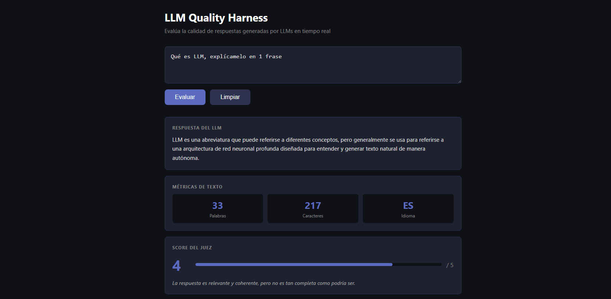
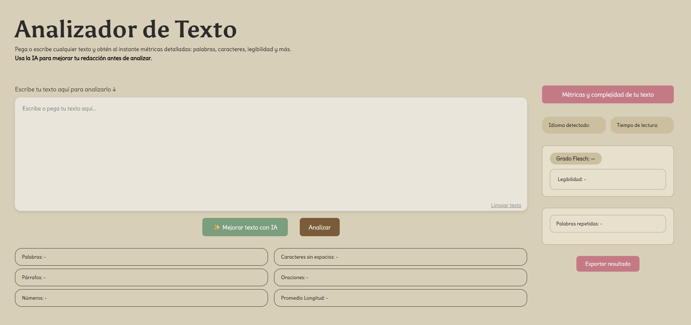
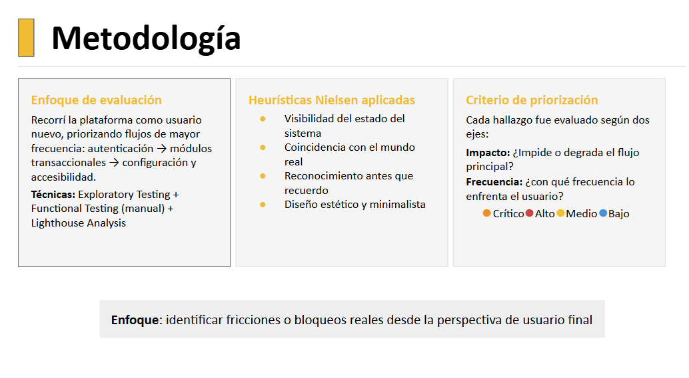
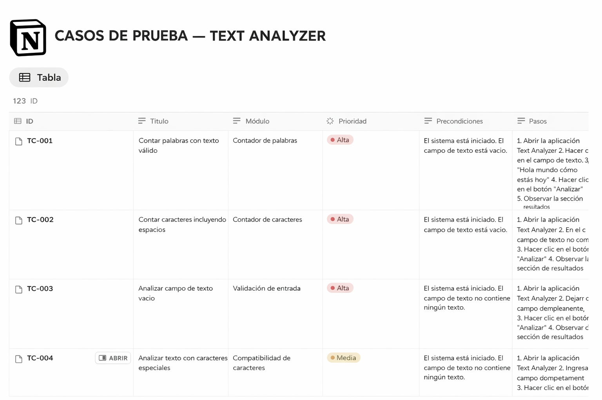
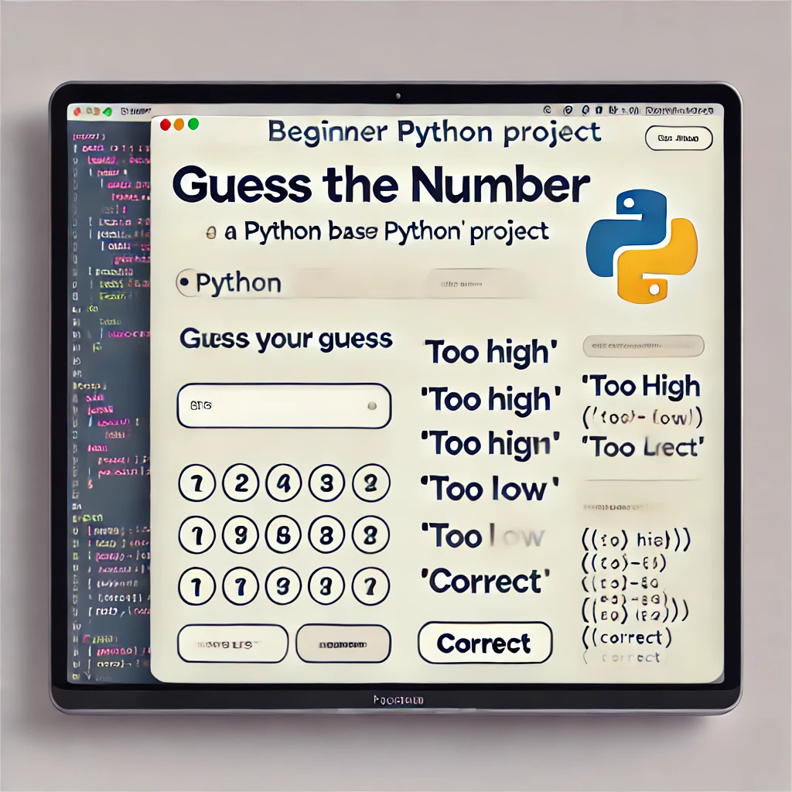
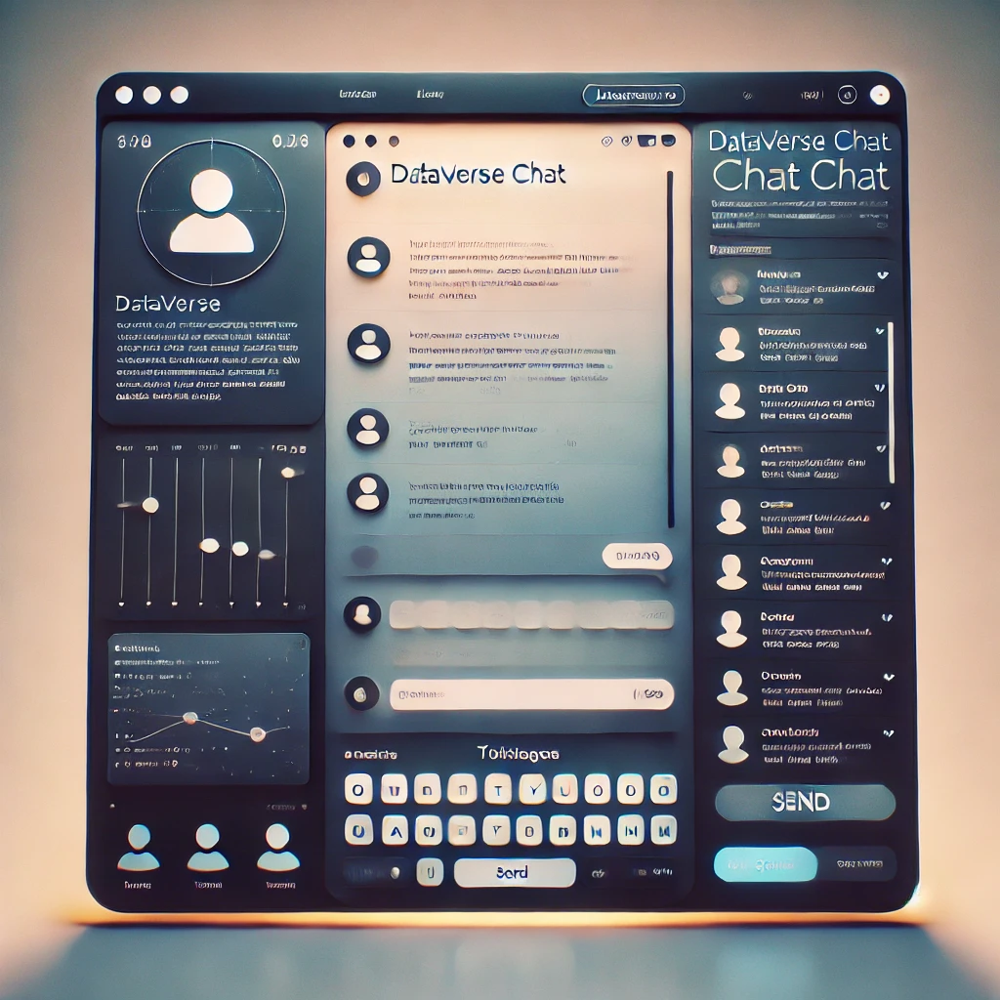

— Portafolio 2026
Soy Estefany, QA Analyst con experiencia validando flujos críticos de aplicaciones móviles en producción en una empresa de retail (Cencosud). Me especializo en asegurar la calidad de sistemas mediante testing funcional, análisis de APIs y automatización E2E con Cypress, identificando riesgos antes de que impacten a los usuarios.
Mi formación en desarrollo front-end (JavaScript, React y Python) me permite comprender la lógica detrás de las aplicaciones y colaborar eficazmente con equipos de desarrollo. Además, he desarrollado proyectos enfocados en evaluación automática de modelos de lenguaje, explorando áreas como AI Quality, observabilidad y análisis de respuestas generadas por LLMs.
Me caracteriza la curiosidad por entender cómo funcionan los sistemas, la atención al detalle y la búsqueda constante de oportunidades para mejorar la confiabilidad de los productos.
Validé flujos críticos de una aplicación móvil en producción mediante testing funcional y manual, documentando incidencias en Jira y analizando respuestas de APIs con Postman. Desarrollé además un scraper en Python integrado con la API de OpenAI para análisis automático de comentarios de usuarios y detección de patrones.
Formación intensiva en desarrollo web con enfoque en proyectos reales. Construí aplicaciones con JavaScript, Python, APIs REST y bases de datos. Trabajo en equipo bajo metodologías ágiles.

API REST en Python/FastAPI que evalúa automáticamente la calidad de respuestas de modelos de lenguaje (LLM-as-a-Judge), con detección de respuestas vacías o en idioma incorrecto, observabilidad en Langfuse y CI/CD con GitHub Actions. Mi exploración del cruce entre QA e IA.
Ver proyecto →
App de análisis de texto en tiempo real con suite de automatización E2E en Cypress (11+ casos): flujos de usuario, validación de métricas, mocking de API con cy.intercept y manejo de errores (éxito, error 500, caída de red). Integra IA local con Ollama.
Ver proyecto→
Auditoría integral de calidad sobre una plataforma web: 12 hallazgos priorizados por impacto y frecuencia, con pasos de reproducción y recomendación técnica. Incluyó análisis de performance con Lighthouse (Core Web Vitals), detección de riesgos de seguridad y evaluación de accesibilidad con heurísticas de Nielsen.
Ver proyecto→API RESTful en Python con arquitectura MVC, validaciones robustas y pruebas unitarias con 90% de cobertura. Documentación completa de endpoints en Postman.
Ver proyecto →
Documentación de casos de prueba manuales para una aplicación web de análisis de texto. Se validaron funcionalidades como conteo de palabras, conteo de caracteres, validación de entradas y manejo de caracteres especiales utilizando Notion para la documentación y Chrome DevTools durante la ejecución de pruebas.
Ver proyecto →
Desarrollado con Python, demuestra lógica interactiva y validación en tiempo real. Una experiencia divertida para los amantes de los números.
Ver proyecto →
SPA con sistema de chat integrado usando la API de OpenAI para interactuar con datos de personajes históricos con respuestas personalizadas.
Ver proyecto →Hablemos